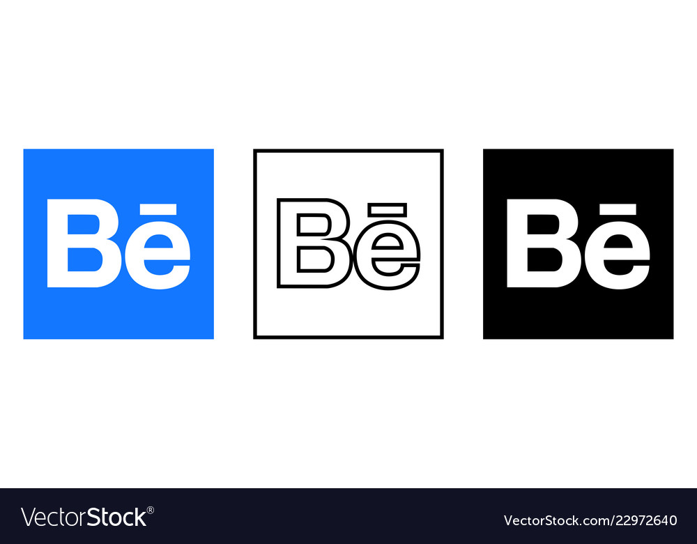
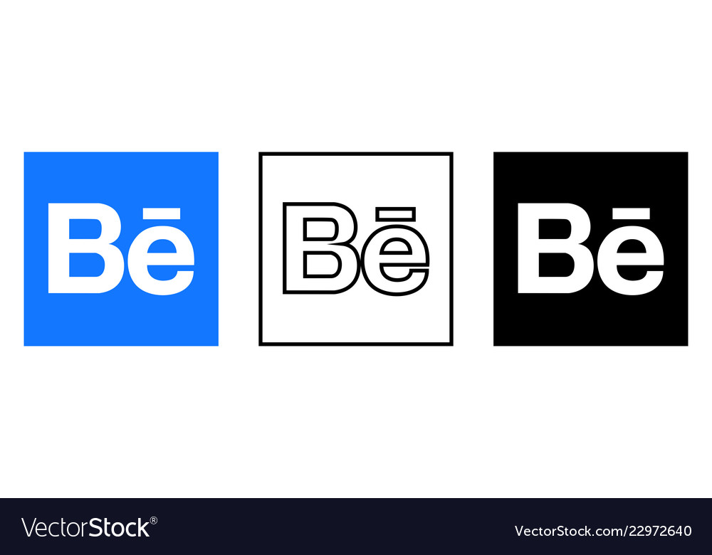

Social Media Prescence
The speed of instagram
I'm currently posting my work in progress, quick illustrations, sketches, and ideas to Instagram. The speed at which I can share my work using my phone is incredible and helpful to stay connected with my Instagram following and keep growing in this journey.
Behance Prescence
I've used Behance since 2011. It's a wonderful tool to have an online portfolio. It encourages to share more than one image and really provide a detail description of the idea, the process and the final result. It's something that I find very important to keep track of.
 
